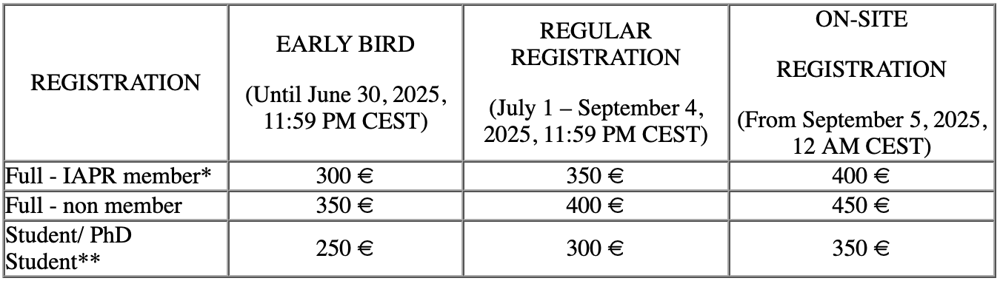

1st Workshop on
Innovative Medical image Processing with AI-driven preCision
Technologies (IMPACT)
in conjunction with the
23rd International Conference on
Image Analysis and Processing (ICIAP 2025)
September 15, 2025 - Rome, Italy
(in-person and online)
About IMPACT 2025
The workshop IMPACT aims to explore the most innovative applications of Artificial Intelligence (AI) in healthcare, with a particular focus on medical image analysis techniques and clinical decision support systems. In the healthcare domain, AI has immense potential to improve diagnostic accuracy, personalize treatments, and optimize clinical workflows. However, the impact of AI applications in medical diagnosis raises important challenges related to the interpretability and explainability of the results, particularly to ensure the transferability of technical aspects to real clinical practice.
This workshop seeks to address these challenges by exploring cutting-edge technical approaches that are currently reshaping the healthcare domain, specifically focusing on how AI can aid medical diagnosis and personalized treatment through the analysis of large amounts of patient data, including medical images, genetic information, and patient history. Advanced AI techniques are employed to analyze complex medical images (MRI, CT, X-rays, PET, ultrasound, H&E staining) to detect anomalies, such as malignancies and other medical conditions, particularly in specialized areas like cancer imaging and digital pathology. These approaches are revolutionizing disease detection, characterization, and treatment, enabling earlier intervention and more precise diagnoses. The proposed workshop will encourage a discussion on technical aspects and their potential integration into a transdisciplinary methodology, incorporating the contributions of domain experts.
Call for Papers
We invite submissions related to the following topics, including, but not limited to:
- AI in Cancer Imaging and Digital Pathology
- AI for early disease detection
- AI applications in cytology, histopathology, and multimodal imaging
- Integration of medical images, genetic data, and clinical information for personalized treatment
- AI-enhanced decision support systems for precision medicine
- Optimizing segmentation, classification and anomaly detection
- Self-supervised and unsupervised learning
- Generative AI in Medical Imaging
- Synthetic data generation for data augmentation and model training
- AI-driven prediction of patient-specific clinical conditions
- Generative models for disease progression modeling and anomaly detection
- Therapeutic optimization strategies
- Explainable medical imaging AI
- Post-hoc and ante-hoc methods for explainability
- XAI methods for neuroimaging and neural signals interpretation
- Human-AI collaboration: integrating explainability for clinical adoption
Paper submissions
IMPACT welcomes diverse contributions, ranging from research papers showcasing well-established findings or ongoing work to innovative papers introducing novel ideas or exploratory research. Additionally, the conference embraces papers that share industry experiences and case studies.
Submitted papers must not exceed 12 pages (including references). Only original contributions that have not been previously published or simultaneously submitted to other venues will be considered for inclusion in the proceedings. All submissions should be made in PDF via EasyChair system.
The accepted papers will be included in a joint Post-Workshop proceeding published by Springer Lecture Notes in Computer Science (LNCS), indexed in Web of Science; Scopus; EI Engineering Index; Google Scholar; DBLP; etc. We suggest workshop papers are prepared and submitted using this template in LNCS format.
Important Dates
Submission deadline: June 16, 2025
June 26, 2025
Notification of acceptance: July 3, 2025
Camera-ready papers: July 10, 2025
Workshop: September 15, 2025 (Afternoon Session 14:30 - 18:00)
Workshop Program
Date: September 15, 2025
Time: 14:30 - 18:00
Location: Sapienza University of Rome, Room: TBD
Talk types: Long (15 min), Flash (10 min), Keynote (30 min)
| Time | Type | Title / Activity |
|---|---|---|
| Welcome & Remarks - 14:30 - 14:40 | ||
| 14:40 - 14:55 | Long | AIDA: AI-Driven Intelligent Diagnostics and Analytics Z. Ruan, S. Gobbo, L. Cima, M. Mondo, S. Sharifi, E. Munari, A. Scarpa, O. Shahbaz Khan, A. Giachetti, F. Setti, Y. Wang, B. Þór Jónsson, M. Cristani |
| 14:55 - 15:05 | Flash | Automated specular reflection detection using weak annotation for deep learning training A. J. Sugiarti, R. Burke, J. Martínez del Rincón, S. T. Sørensen |
| 15:05 - 15:35 (online) |
Keynote | The impact of uncertainty quantification on radiomic robustness Elisa Scalco |
| 15:35 - 15:50 | Long | Carbon Nanoparticles in Breast Cell Imaging for CNN-Based Tumor Detection M. Gravina, S. Capuozzo, G. Saviano, J. Gortz, V. Panzetta, C. Russo, M. Sirignano, P.A. Netti, C. Sansone |
| 15:50 - 16:00 | Flash | Speed-Performance Balance in Constrained Attention-based Models for Endoscopy Video Sequences R.R. Slavescu, D.A. Ulics, K.C. Slavescu |
| Coffee Break - 16:00 - 16:30 | ||
| 16:30 - 16:45 | Long | Biatrial segmentation from Cine MRI using convolutional and attention networks E. Corrado Amato, M. La Rocca, N. Amoroso, T. Maggipinto, T. Kudelka, V. Wilzeck, M. Fuetterer, R. Manka, S. Kozerke, R. Bellotti, S. Buoso |
| 16:45 - 16:55 | Flash | Semi-Supervised Classification with Augmented Laplacian SVM: Application to Mammowave Breast Cancer Data B. Naeem, G. Gnecco, M. Riccaboni, M. Badia, G. Tiberi |
| 16:55 - 17:05 | Flash | Uncovering Lung Lesion Patterns in CT Scans through Topological Machine Learning S.G. De Benedictis, N. Del Buono |
| 17:05 - 17:15 | Flash | A Privacy-preserving Method for Explainable Multiple Sclerosis detection through Federated Machine Learning F. Niro, M. Di Renzo, P. Agnello, M. Petyx, G. Ciaramella, F. Martinelli, M. Cesarelli, A. Santone, F. Mercaldo |
| 17:15 - 17:30 (online) |
Long | Quantum Machine Learning-Based Detection of Retinopathy in Retinal Images of Diabetic Patients C. Cascone, M. Nappi, C. Pero, M. Polsinelli |
| 17:30 - 17:40 | Flash | AI in Pediatric Urology: Deep Learning-based Approach supporting Posterior Urethral Valves Diagnosis on VCUG Imaging C. Russo, G. Settembre, G. Gargano, M.S. de Biase, R. De Fazio |
| 17:40 - 17:50 | Flash | Scale-Aware Fractal-Lacunarity Analysis of Handwriting for Alzheimer's Disease Classification E. Nardone, M. Cantone, G. Lozupone, C.D. Pace, C. Russo, T. D'Alessandro |
| 17:50 - 18:00 | Flash | Detection of Drug Abuse through CNNs and ViTs: a Comparative Analysis of Performance and Explainability P. Pagliuca, G. Tufo, M. Zribi, F. Pitolli |
| Closing & Best Paper Award | ||
Hybrid event: All presentations will be accessible both in-person and online for registered participants.
Keynote Speaker

Elisa Scalco is a Biomedical Engineer and Researcher at ITB-CNR (Institute of Biomedical Technologies, National Research Council) since 2019. She earned her BSc and MSc in Biomedical Engineering from Politecnico di Milano and her PhD (2014) in Biomedical Technologies from the University of Milan Bicocca, with a thesis on "Evaluation of morphological and structural variations in parotid glands during radiotherapy in the head-and-neck district."
Her research focuses on biomedical image processing and analysis, including image registration, radiomics (quantitative feature extraction from CT/MRI), and AI applications in medical imaging. Her work supports clinical studies in chronic kidney diseases and oncology, particularly in tumor diagnosis, classification, and treatment response prediction.
Organizing Committee


Program Committee
- Alessandro Bria, University of Cassino and Southern Lazio
- Giovanna Castellano, University of Bari Aldo Moro
- Marco Cantone, University of Cassino and Southern Lazio
- Mariarosaria Castaldo, University of Campania Luigi Vanvitelli
- Ciro Castiello, University of Bari Aldo Moro
- Sabino Ciavarella, MD, IRCCS Istituto Tumori Giovanni Paolo II - Bari
- Maria Stella de Biase, University of Campania Luigi Vanvitelli
- Nicoletta Del Buono, University of Bari Aldo Moro
- Domenico Pomarico, University of Bari Aldo Moro & National Institute for Nuclear Physics
- Andrea Esposito, University of Bari Aldo Moro
- Xavier Llado, University of Girona
- Luisa Lorenzi, MD, University of Brescia & ASST degli Spedali Civili di Brescia
- Claudio Marrocco, University of Cassino and Southern Lazio
- Stefano Marrone, University of Campania Luigi Vanvitelli
- Pierluigi Marzuillo, MD, University of Campania Luigi Vanvitelli
- Francesco Mercaldo, University of Molise
- Arnau Oliver, University of Girona
- Giulio Russo, University of Cassino and Southern Lazio
- Laura Selicato, CNR - Consiglio Nazionale delle Ricerche - Bari
- Laura Verde, University of Campania Luigi Vanvitelli
- Sabina Tangaro, National Institute for Nuclear Physics & University of Bari Aldo Moro
- Gennaro Vessio, University of Bari Aldo Moro
- Jan Vrba, University of Chemistry and Technology Prague
Registration
Each accepted paper must be covered by at least one registered author.
Here is reported the registration fee ONLY for the workshop days (15 and 16 September
2025):

Please note: authors of accepted Tutorials/Workshops are required to include the abstract code in the registration form
*IAPR members: uploading a current Proof of membership is mandatory (valid membership certificate to CVPL or any other IAPR Member Organization)
**Student/PhD Student: to register as a student, a Proof of status is mandatory. To benefit from the special fee, a submission of your status confirmation (approval letter signed by the Head of Department or copy of your status ID) must be uploaded during the Online registration.
For detailed instructions and information on registration fees, please visit the ICIAP registration page.
Venue
The workshop and tutorials venue will be in the Department of Computer Science, located in the just outside the main campus at Sapienza University of Rome. The Department is located at Viale Regina Elena 295, 00185 Rome.
Please read about the venue in the ICIAP venue page.
Organized by: